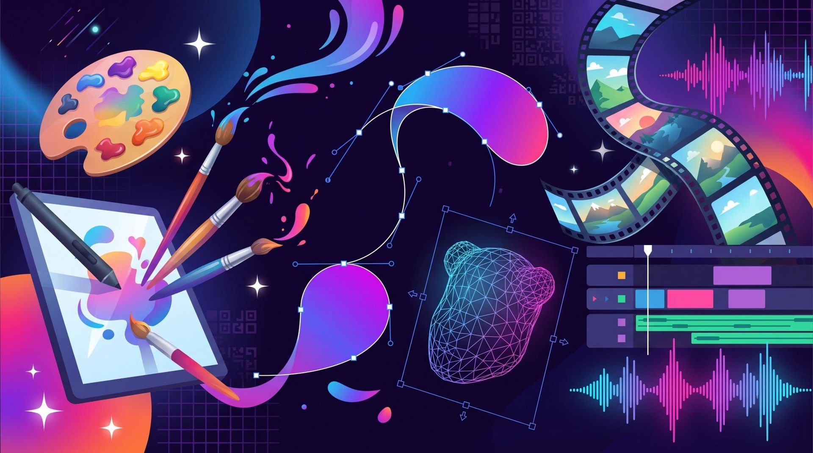
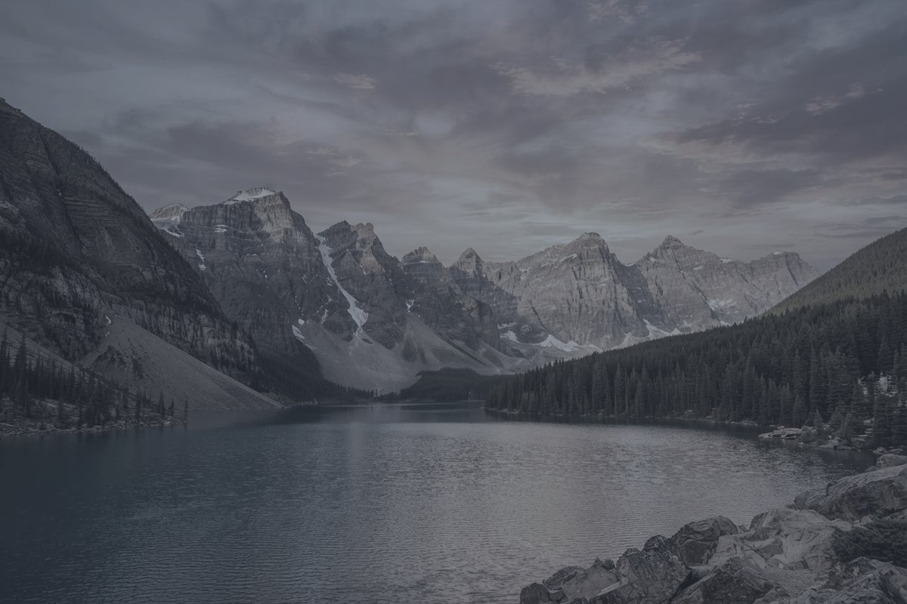

Crea sin pedir permiso. Ni pagar.
Adobe Creative Cloud (todas las apps) cuesta más de $600 USD al año. Estas herramientas cuestan $0 — y los profesionales las usan a diario: imagen, video, 3D y audio.
Una herramienta para cada oficio
Filtra por disciplina o busca por el programa que quieres reemplazar.
No encontramos nada con ese término. Prueba con otra palabra.
Una imagen es una pila de capas
Así se ve el póster terminado. Sigue bajando y míralo por dentro.
Toca el ojo de cada capa para ocultarla o mostrarla.
Súbele, bájale: mézclalo tú
Así trabajan Ardour, LMMS o Audacity: cada instrumento va en su propio canal. Dale play y mueve los faders. El sonido se genera en vivo en tu navegador.
Consejo: silencia todo menos un canal (botón M) para escuchar cada instrumento por separado.
Del antes al después, en un arrastre
Mueve la línea. Con herramientas como GIMP o Darktable, una foto plana se convierte en otra cosa.

AntesLas ilustraciones de las tarjetas y la portada de esta página fueron generadas con IA (Gemini); no son fotografías ni capturas reales.